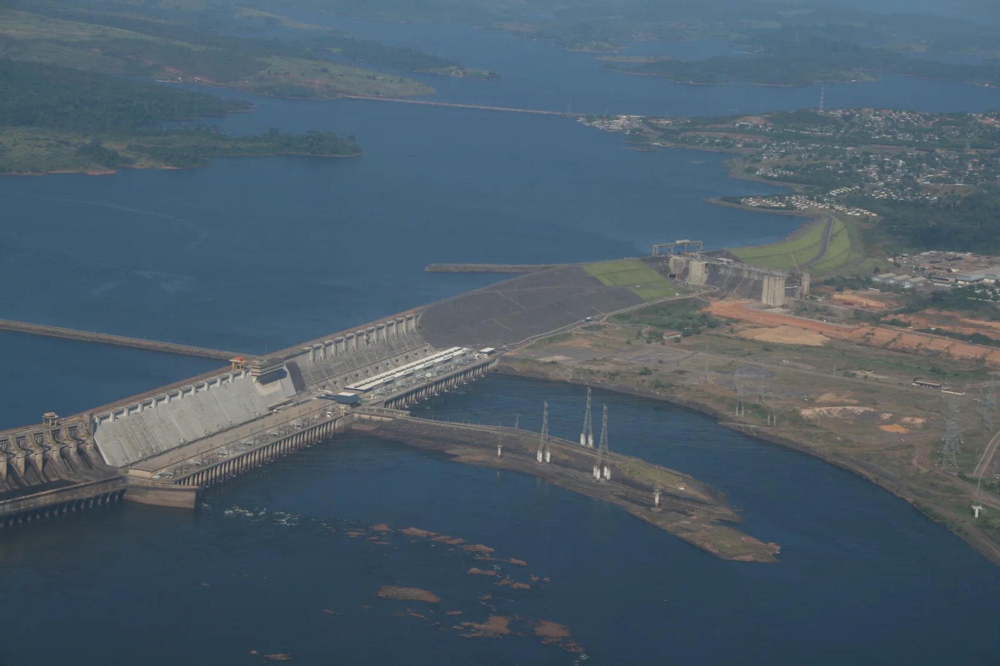
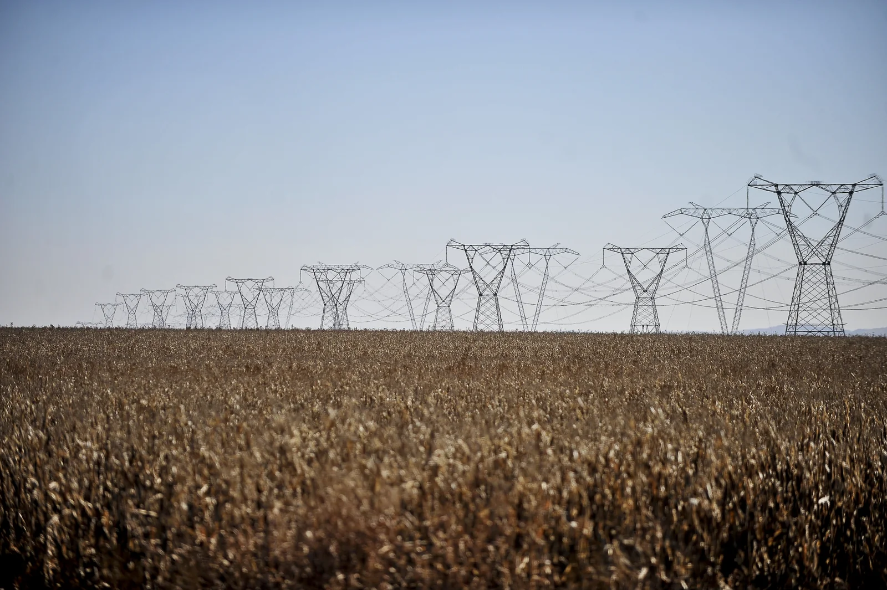

O início do filme usa duas fotografias históricas verificáveis de infraestrutura energética brasileira. O enquadramento, a redução de saturação, o movimento de câmera, a montagem e as transições na tela são edição autoral da NIVAR sobre essas fotografias; não são filmagens documentais em movimento.
Os planos de matéria e medição gerados digitalmente são estudos editoriais, sem representar uma instalação real. O instrumento utiliza uma série sintética demonstrativa do Terminal Brasil. Seus valores não medem as instalações fotografadas, não descrevem a produção de Tucuruí e não são telemetria ao vivo.
01 · Território — Tucuruí, Pará

Bruno Huberman / Repórter do Futuro · 22 de julho de 2008.
Derivados NIVAR: redimensionamento e compressão WebP. Sem retoque da infraestrutura, adição ou remoção de objetos. A licença da fonte permite adaptação com atribuição. Nenhum endosso do fotógrafo ou das instituições é sugerido.
02 · Transmissão — Brasil

Marcello Casal Jr / Agência Brasil · galeria publicada em 17 de setembro de 2012 · arquivo MCA7678.
A galeria não informa cidade, estado, tensão ou nome da linha. A NIVAR mantém apenas a identificação Brasil e a data de publicação da galeria, sem inferir localização ou características elétricas. Derivados NIVAR: redimensionamento e compressão WebP, sem retoque, adição ou remoção de objetos.
Fontes consultadas em 12 de setembro de 2026. Fotografias de arquivo, sem alegação de representar o estado atual das instalações. Voltar ao filme.
{kind=link}